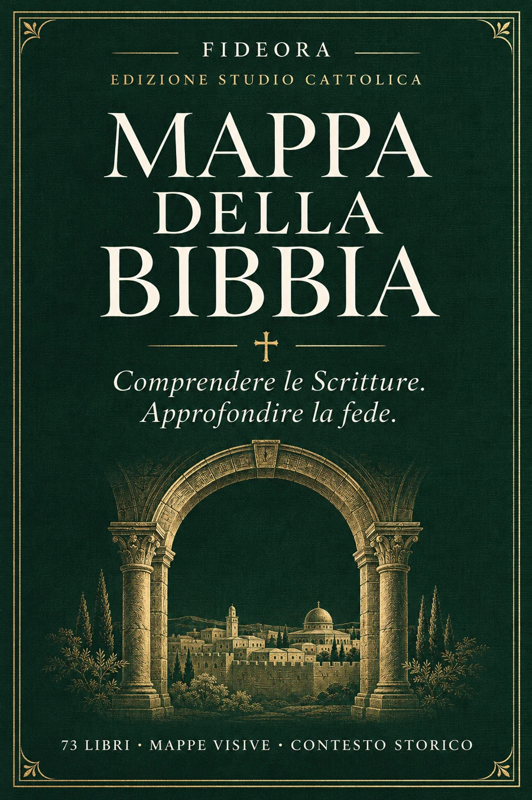
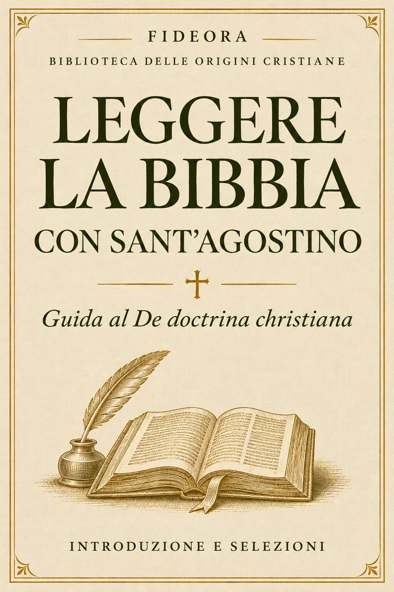

Orientati
Riconosci libri, personaggi e avvenimenti nel panorama della Bibbia.
Mappa della Bibbia — Edizione Studio Cattolica
Dai singoli versetti al loro significato. Una guida visiva ai 73 libri, con contesto storico e una biblioteca per continuare ad approfondire.

Una nuova edizione. Un percorso più profondo.
Edizione digitale completa in italiano · Libro + biblioteca
Un filo tra le pagine
Un nome che non ricordi. Una storia che sembra lontana. Un versetto che conosci, ma che vorresti capire meglio. Per orientarti nelle Scritture serve un quadro d’insieme e uno spazio per fermarti sui dettagli.
La nuova Mappa unisce chiarezza visiva e approfondimento: ti aiuta a riconoscere il posto di ogni libro, collegare le storie e avvicinarti al contesto delle parole, alla luce della fede cattolica.
Riconosci libri, personaggi e avvenimenti nel panorama della Bibbia.
Leggi riassunti, contesto e collegamenti per dare un senso all’insieme.
Fermati su passaggi scelti e continua con letture guidate e fonti.
Raccogli domande, riflessioni e un piccolo passo per il tuo cammino.
Dentro la nuova Mappa
Carte geografiche, percorsi e tavole di studio. Apri le anteprime e guarda da vicino la nuova direzione editoriale.
Tocca una tavola per ingrandirla · Cartografia originale su base Natural Earth.
Pagine dimostrative della collezione completa.
Cinque parti, un percorso
Edizione Studio Cattolica
Organizzazione dei 73 libri, generi letterari, luoghi e filo degli avvenimenti: una base chiara per iniziare.
Per ogni libro: contesto, riassunto, personaggi, temi, riferimenti e collegamenti con il resto della Bibbia.
Passaggi scelti, dal racconto della creazione a Emmaus: contesto, parole chiave spiegate e domande per una lettura attenta.
Un percorso tra preghiera e temi della fede, con rimandi biblici e riferimenti al Catechismo.
Un itinerario iniziale di 30 giorni, introduzione alla lectio divina, checklist e pagine per le tue annotazioni.
Inclusa nella nuova collezione
Quattro volumi per conoscere le prime comunità, avvicinarti ai Padri della Chiesa e comprendere il mondo dei Vangeli.

01 · Le prime comunità
L’opera completa della collezione sulle prime comunità cristiane, con introduzione e note per accompagnarti nella lettura.
Edizione commentata
02 · I commenti antichi
Una lettura dei Vangeli attraverso la voce dei Padri della Chiesa e il patrimonio della Catena Aurea di san Tommaso d’Aquino.
Opera completa con commenti
03 · Comprendere il testo
Il pensiero di sant’Agostino e il De doctrina christiana per approfondire la comprensione delle Scritture.
Opera completa della collezione04 · Il contesto storico
Gerusalemme e il contesto dei Vangeli attraverso gli scritti di Flavio Giuseppe, con spiegazioni e riferimenti.
Opera completa di approfondimentoCinque opere complete in edizione digitale italiana: la Mappa e i quattro volumi della Biblioteca delle Origini Cristiane.
Il tuo compagno quotidiano

Uno spazio da portare con te, per leggere, collegare e raccogliere ciò che scopri nel tuo percorso.
Schermata reale di Fideora. Con questa offerta, il libro e i quattro volumi completi della biblioteca sono inclusi gratis.
Due modi per iniziare
Scegli il libro con la biblioteca, oppure l’app con l’intera collezione in omaggio. Cinque opere complete, da leggere e conservare.
La collezione da conservare
Cinque volumi, un unico percorso
Valori editoriali stimati, non precedenti prezzi di vendita. I volumi non sono attualmente venduti singolarmente.
L’intera collezione a
Pagamento unico · Nessun abbonamento
Pagamento sicuro con Mundpay · Collezione digitale completa
Il percorso completo
Attiva l’app.
Libro e biblioteca sono gratis.
La stessa collezione completa.
Nessun costo aggiuntivo.
Paghi soltanto l’app
Abbonamento con rinnovo mensile
Scarica Fideora dall’App Store e attiva un piano dentro l’app.
Il nuovo piano Studio da €9,90/mese è in attivazione. Nell’app trovi i piani attualmente disponibili; il prezzo è mostrato da Apple prima della conferma.
Il libro e i quattro volumi sono digitali: non è prevista spedizione. La collezione in omaggio è inclusa con l’attivazione dell’offerta Fideora presentata qui. Il piano Studio presentato qui prevede €9,90 al mese ed è in attivazione; il pulsante apre la pagina di download di Fideora. Prezzi e condizioni dei piani già disponibili sono mostrati nell’app da Apple prima della conferma. Puoi gestire e annullare l’abbonamento dalle impostazioni Apple.
Prima di iniziare
Un percorso chiaro, fin dalla scelta.
No. Il libro e i quattro volumi sono edizioni digitali in italiano. Le immagini delle copertine illustrano il progetto editoriale; non è prevista spedizione.
Il percorso è pensato per accompagnarti dall’orientamento iniziale a letture più approfondite, con linguaggio accessibile e riferimenti per continuare. Il libro è una guida di studio, distinta dal testo completo della Bibbia.
La collezione comprende cinque opere digitali complete. Fideora è l’app per leggere, studiare e pregare ogni giorno. Scegliendo l’offerta con l’app, ricevi anche il libro e l’intera biblioteca gratis.
Sì. Ricevi Mappa della Bibbia e tutti e quattro i volumi della Biblioteca delle Origini Cristiane in versione digitale completa, con i relativi contenuti, commenti e approfondimenti.
Mappa della Bibbia è una guida completa ai 73 libri del canone cattolico: ti accompagna con mappe, contesto e collegamenti. È uno strumento per comprendere e approfondire le Scritture, da affiancare alla lettura della Bibbia.
Dopo aver confermato nome ed email, apri la pagina di Fideora sull’App Store. Scarica o apri l’app su iPhone o iPad e scegli un piano al suo interno. Apple mostra prezzo e rinnovo prima della conferma. Il nuovo piano Studio da €9,90/mese con la collezione in omaggio è in attivazione e non è ancora selezionabile nell’app.
L’abbonamento Apple di questa offerta è destinato a iPhone e iPad. Il libro digitale può essere letto anche da altri dispositivi. Per informazioni sull’accesso Android attuale di Fideora, consulta il sito dell’app.
Dopo la conferma dell’acquisto ricevi le istruzioni di accesso all’email indicata nel primo passaggio dell’ordine. Con l’offerta Fideora, la collezione completa è inclusa dopo l’attivazione dell’abbonamento. Per assistenza puoi scrivere a support@fideora.app.
La tua prossima pagina
Edizione digitale completa in italiano · Cinque opere, un unico percorso.